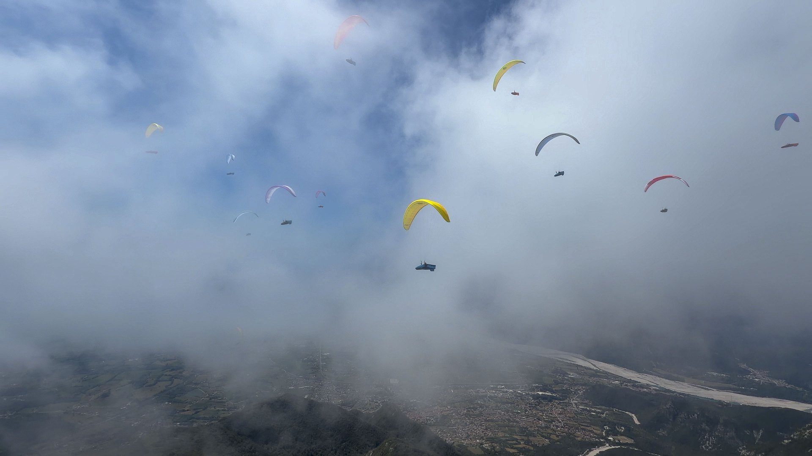
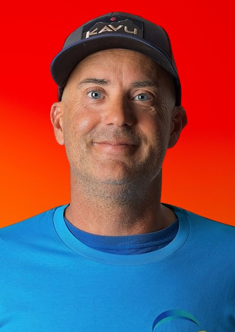
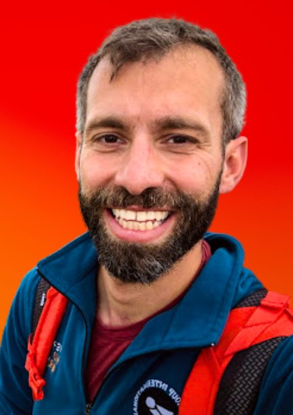
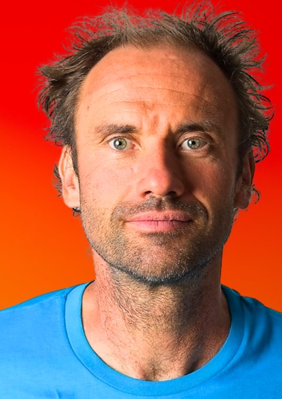

The Paragliding Atlas Podcast
Long-form paragliding interviews with designers, test pilots, instructors and world champions. Stories, technical knowledge and defining moments from the people who shape free flight, every episode with a full transcript.

Intimate, deep and often thought provoking, these conversations are curated to stimulate, educate, inspire and empower you to touch the sky with glory every time you practice the art of flight.
Aninder Singh
Every week, Aninder dives deep into all things paragliding with some of the most forward-thinking, paradigm-busting minds in the sport.
Click A Pin, Hear The Story
Drag to rotate. Click a pin to see the episode.
Conversations Drawn From The World Of Free Flight In The Blue Yonder
Connecting to RSS feed...
What You Can Expect
Global Destinations
From the towering peaks of the Himalayas to the serene landscapes of the African Highlands, join us as we explore the world's premier paragliding spots
Expert Insights
Learn the ins and outs of paragliding with advice from professionals who live and breathe the sport. Discover the best seasons for flying, understand complex topographies, and get a sneak peek into local flying cultures.
Safety First
Navigating the skies is thrilling, but safety is paramount. Gain knowledge about airspace regulations, weather considerations, and equipment must-haves to ensure each flight is not just exhilarating but also secure.
Cultural Immersion
Paragliding is more than just taking off; it's about immersing yourself in new cultures. Learn about the customs, traditions, and local delicacies that make each destination unique.
Thematic Mini-Series
Dive deeper with our thematic mini-series, where we zoom in on specific topics, hosting a lineup of industry professionals to share their stories, challenges, and the joy of flying.
What Listeners Are Saying
Aninder! Just want to say, wow, I didn't know about your podcast until just recently. This one with Russel is fantastic, not only because of him & his honesty but also due to your style and your deep questions. Really really well done, thanks for doing this for all of us in the flying community!

Thank you for getting Dr Matt Wikes on your podcast. This one has been very informative.

Excellent discussion and subject! I share your observations and analysis, but besides sharing or not, these are the kind of topics and discussions we should be having in our communities. Thanks for that!
 Watch this Before you Buy a Paragliding Harness | A Talk with Zsolt Ero
Watch this Before you Buy a Paragliding Harness | A Talk with Zsolt Eroanother masterclass, thanks for sharing
 How to Thermal Like a Pro: Find, Center & Climb with Brett Janaway
How to Thermal Like a Pro: Find, Center & Climb with Brett JanawayThank you for the show and the huge amount of info. I'm glad that I got the confirmation that what I do seems to be right regarding the "blocked" hips subject… Happy flights!
 Metacognition: Paragliding's Hidden Psychology with Beni Kalin & Heli Schrempf
Metacognition: Paragliding's Hidden Psychology with Beni Kalin & Heli SchrempfThis is really good. I've learned a lot and it has completely changed my understanding of harness protection.
Watch this Before you Buy a Paragliding Harness | A Talk with Zsolt EroDude this is literally the most interesting episode of your podcast (so far). Thx so much to both of you fellas!
Finally a debrief of the sportive part of the event, thanks! :)
 Task 1 Highlights | 15th Paragliding World Cup Super Final Pegalajar 2026
Task 1 Highlights | 15th Paragliding World Cup Super Final Pegalajar 2026Best coverage of an XC comp so far, IMO. Really liked the part where you gave the summary of the race using tracklogs playback.
Task 1 Highlights | 15th Paragliding World Cup Super Final Pegalajar 2026Super insightful, hearing the GOAT designer explaining the principles of our so wonderful equipment.

wow another big stone in the puddle, waves a'coming, thanks for having the balls to do it
Watch this Before you Buy a Paragliding Harness | A Talk with Zsolt EroGot a Question For The Show?
Whether it's about gear, safety, technique, or the mindset side of flying, Aninder reads every submission personally.
Collaborate with Aninder
Are you a pilot, instructor, or weather guru with insights to share? If you've got stories about epic flights, hard-won lessons, or next-level techniques, let's get you on Paragliding Atlas.
More
Let's team up to help pilots across the globe fly smarter and push boundaries together.
Email me at aninder@paraglidingatlas.com and we'll take it from there.
Sponsor Paragliding Atlas Podcast
Connect with the fastest growing community of pilots on the interweb. Reach out to our ever increasing audience base from 136 countries and counting.
More
If your brand shares our love for the skies, we'd be honored to explore how we might work together to serve this incredible sport.
Let's help more pilots fly smarter and safer, together.
Fly Better, Every Week
Press play and start transforming your flying today. Listen, watch, or subscribe.
Never Miss an Episode
Subscribe to get the latest episodes and exclusive content delivered to your inbox.